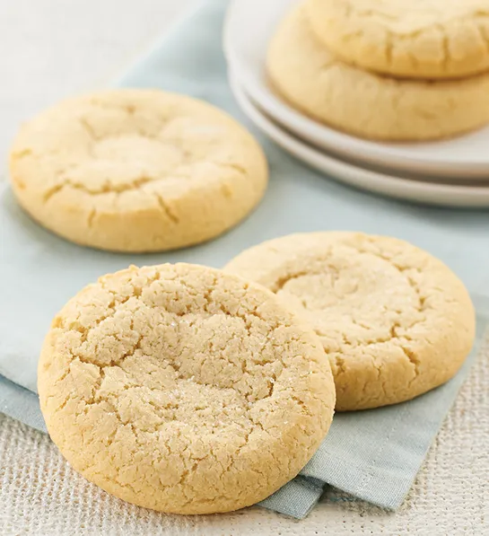

Old-Fashioned Sugar Cookies

Description
It's old fashioned, it's comforting, it makes the kitchen smell wonderful and it's good for the soul.
They are really good plain or with candies in them. My friend uses chocolate mints on top, and they're great!
Ingredients
- 2 3/4 cups all-purpose flour
- 1 teaspoon baking soda
- 1/2 teaspoon baking powder
- 1 cup butter, softened
- 1 1/2 cups white sugar
- 1 egg
- 1 teaspoon vanilla extract
- 1/4 cup white sugar
Steps
- Preheat oven to 375 degrees F (190 degrees C).
- Mix flour, baking soda, and baking powder in a small bowl.
- Beat butter and 1 1/2 cups sugar with an electric mixer in a large bowl until smooth; stir in egg and vanilla extract. Gradually blend flour mixture into butter mixture. Roll dough into walnut-sized balls and toss in 1/4 cup sugar; place 2 inches apart onto ungreased baking sheets.
- Bake in preheated oven until golden, 8 to 9 minutes.
- Let stand on cookie sheet 2 minutes before removing to wire racks to cool.
Home page